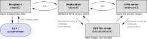
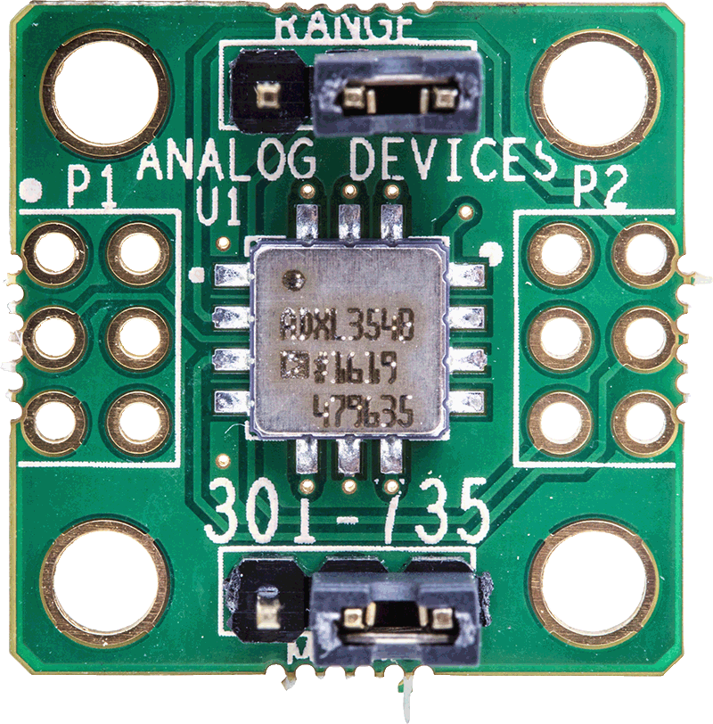
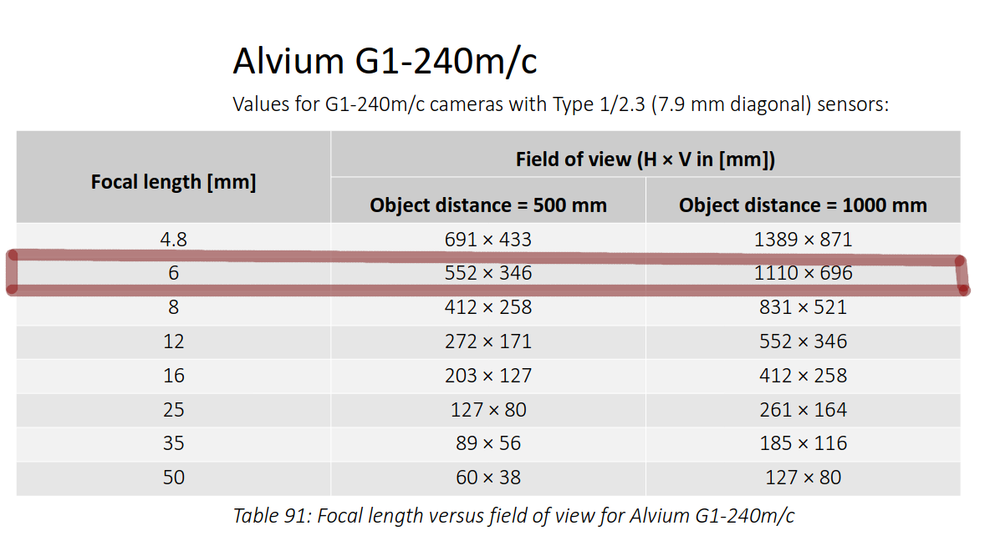
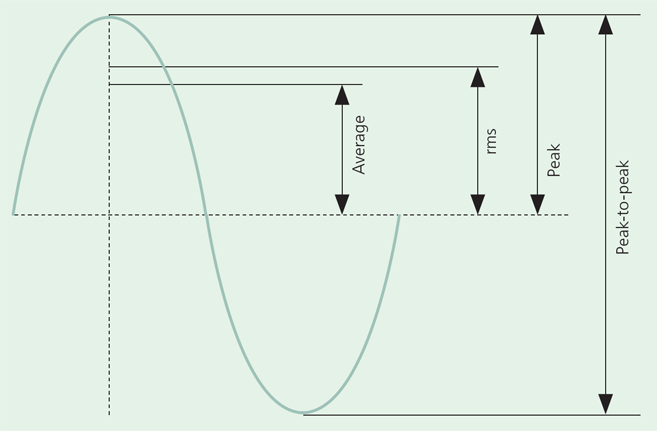
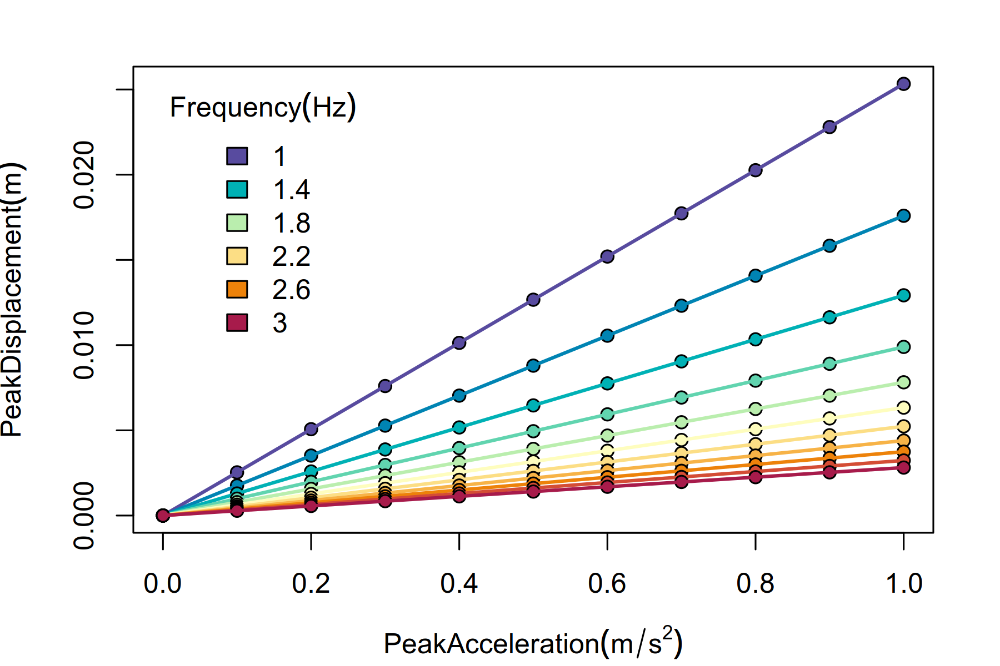
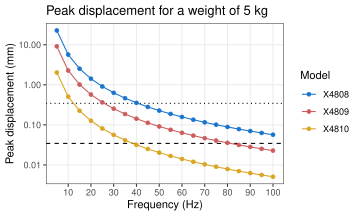
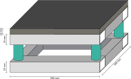

The computer network consists of the following nodes:
The workstation is the access point for all users of the lab and is the only machine locate in the lab room. The GPU server processes the images from cameras and runs the API to interface with the cameras (port 3000). The images are stored on the IDIV file server. The raspberry manages the EVAL-ADXL355Z accelerometer (Analog Devices Inc.) sensor mounted on the experimental plate. The diagram below shows the main connections and functions of the machines in the network.


The accelerometer is the Analog Devices ADXL355, a digital output accelerometer mounted on the EVAL-ADXL355Z board. The ADXL355 specifications are:
| Hex address | Name | Content |
|---|---|---|
| 0x04 | STATUS (0:3) | DATA_RDY (0), FIFO_FULL (1), FIFO_OVR (2), ACTIVITY (3) |
| 0x05 | FIFO_ENTRIES (0:6) | Number of data samples stored in the FIFO |
| 0x07 | TEMP1 (0:7) | Uncalibrated temperature |
| 0x08 - 0x10 | DATA | XYZ accelerometer data |
| 0x11 | FIFO_DATA (0:7) | Access data in the FIFO |
| 0x28 | ODR_LPF (0:3) & HPF_CORNER (4:6) | OutputDataRate_LowPassFilter & HighPassFilter_Corner |
| 0x29 | FIFO_SAMPLES (0:6) | |
| 0x2B | EXT_SYNC (0:1) | Set external synchronization |
| 0x2C | RANGE (0:1) | Acceleration range: 01=±2g, 10=±4g, 11=±8g |
The DRDY PIN is set when new acceleration data is available and clears on FIFO read.
FIFO_FULL is set when the entries in the FIFO are equal to the setting of the FIFO_SAMPLES bits and clears on a read of the status register, but only when the entries in the FIFO are less than the FIFO_SAMPLES bits.
FIFO data is formatted to 24 bits, three bytes, most significant byte first. A read to 0x11 (FIFO_DATA) pops a effective three equal byte words of axis data from the FIFO. Two subsequent reads or a multibyte read completes the transaction of this data onto the interface. Continued reading or a sustained multibyte read of this field continues to pop the FIFO every third byte. Multibyte reads to this address do not increment the address pointer. If this address is read due to an auto-increment from the previous address, it does not pop the FIFO. Instead, it returns zeros and increments on to the next address.
Read FIFO_ENTRIES (0x05) to get the number of valid locations, N. Round down to a multiple of 3 so you only read complete XYZ samples. Issue a single burst starting at 0x11 for N × 3 bytes. For each 3-byte word, check the X-marker bit to confirm alignment, then assemble the 20-bit two’s-complement value from the data bits.
Best setting for 0x28 (0:3) is 0010, i.e. ODR=1000Hz and LPF=250 Hz. Setting 0x28 (4:6) as 001, i.e. HPF_CORNER=2.47Hz (for ODR=1000Hz), removes DC and slow tilt. In this case, DC is the constant gravitational force.
The accelerometer communicates with the raspberry raspct02 using the dedicated driver. Data can be viewed, saved and downloaded connecting to raspct02 through HTML (port 8080). Code for acquiring data and HTML connection is hosted at https://github.com/EcoNetLab/adxl.

The EcoNetLab has an organization GitHub: https://github.com/EcoNetLab. Please write to emilio.berti@idiv.de if you want access to the repositories of the organization account.
Should come soon into an open source repository.
Help with the computer network:
Ask IT to store it in a long-term storage option with DOI

\[ Avg = \frac{2}{\pi} Peak \]
\[ RMS = \frac{Peak}{\sqrt{2}} \]
\[ \text{Crest factor} = \frac{Peak}{RMS} \]
\[ \text{Form factor} = \frac{RMS}{Avg} \]
The displacement \(x(t)\) (\(m\)) at time \(t\) (\(s\)) is given by: \[ x(t) = X \sin{2 \pi f t} \] where \(X\) is the peak displacement and \(f\) the frequency (\(Hz\)).
The acceleration \(a(t)\) (\(m / s^2\)) is given by: \[ a(t) = -(2 \pi f)^2 x(t) = - (2 \pi f)^2 X \sin{2 \pi f t} \]
Therefore, the peak displacement is given by: \[ X = \frac{A}{(2 \pi f)^2} \] where \(A\) is peak acceleration
From the above, two different frequencies \(f_1\) and \(f_2\) give the same peak displacement if and only if: \[ \frac{A_1}{A_2} = \left( \frac{f_1}{f_2}\right)^2 \]


The system is built in two frames connected by vibration isolators. The bottom ballast frame consists of a ballast steel plate to dampen the vibrations transmitted by the fridge wall and floor. The top isolated frame consists of a sound-proof frame that contains the experimental arena and the sensors. Vibration isolators are inserted below the ballast frame as well as between the two frames. The camera is firmly attached to the isolated frame, as to have the same reference system of the arena. The two frames will have the same dimensions. The depth (\(D)\) of the fridge is smaller than its width and is the limiting factor of the frame design. Because \(D = 59cm \), in order to leave a buffer distance of \(d = 1.5cm\) from the walls of the fridge, the two frames will be of \(56cm\) in width (\(W\)) and depth. The frames are made of hollow squared steel beams of \(2.5 \times 2.5 cm\) and with a wall thickness of \(2mm\) and bolted together using steel connectors.
The dimensions of the ballast frame are:

Because the field of view of the camera at 80 cm distance is around \(88 \times 55 cm\), for a 20cm tall arena, the camera should be placed at 100cm from the arena floor, to be able to capture the whole arena ceiling. The camera can be attached around 8 cm behind the lens and, thus, a length of \(10cm\) should be added to the height of the isolated frame to have a reasonable safety buffer. A sound absorbing layer of acoustic foam of \(2.5cm\) will be attached to the inner wall of the isolated frame. The dimensions of the isolated frame are thus:
This will fit a circular arena of outer diameter of \(50cm\).